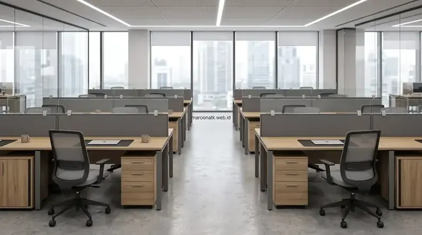

Faktor Utama Penentu Harga Paket Furniture Kantor per Workstation di Jakarta
Harga paket furniture kantor per workstation di wilayah DKI Jakarta pada tahun 2026 berkisar antara Rp 1.500.000 hingga Rp 2.500.000 untuk Paket Basic, Rp 2.800.000 hingga Rp 4.500.000 untuk Paket Standard, dan Rp 4.800.000 hingga Rp 8.500.000+ untuk Paket Premium. Variasi biaya ini ditentukan oleh spesifikasi material papan (MFC vs Multiplek HPL), ketebalan rangka baja kaki meja, fitur mekanik kursi kerja ergonomis, kelengkapan laci mobile pedestal, serta sistem manajemen kabel tersembunyi.
Mendirikan kantor baru atau melakukan ekspansi cabang di kawasan perkantoran Jakarta—seperti SCBD Sudirman, Mega Kuningan, TB Simatupang, hingga area ruko komersial di Jakarta Barat dan Jakarta Utara—menuntut perencanaan anggaran CapEx (Capital Expenditure) yang presisi. Bagi para founder startup, Purchasing Manager, dan General Affair, mengetahui patokan harga paket furniture kantor borongan per meja staf sangat penting agar penyusunan Rencana Anggaran Biaya (RAB) tidak meleset jauh saat tender vendor dibuka.
Sistem paket workstation (workstation cluster) kini menjadi standar pengadaan modern karena menawarkan penghematan biaya borongan yang signifikan dibandingkan membeli meja, kursi, dan laci secara eceran terpisah. Selain itu, memilih paket furniture kantor terintegrasi menjamin keseragaman estetika interior serta efisiensi tata ruang lantai kerja.

SOP Pengadaan Furniture Kantor B2B: Panduan Lengkap Purchasing Team
Prosedur 14 tahapan procurement furniture korporat mulai dari formulasi TOR spesifikasi hingga Berita Acara Serah Terima (BAST).
Komponen yang Termasuk dalam 1 Set Workstation Kantor
Sebelum membandingkan nominal penawaran harga antar vendor, purchasing team harus memastikan komponen apa saja yang tercakup dalam satu unit workstation:
- Meja Kerja Staf (Office Desk): Meja utama berukuran standar 120x60 cm, 120x70 cm, atau 140x70 cm dengan ketinggian ergonomis 75 cm. Dilengkapi top table tahan gores dan rangka kaki baja atau panel kayu.
- Kursi Kantor Ergonomis: Kursi kerja berbahan mesh breathable, dilengkapi tuas hidrolik pengatur ketinggian (gaslift Class 3/4), bantalan busa cetak (molded foam), dan armrest.
- Mobile Pedestal (Laci Sorong): Lemari laci 3 susun beroda yang ditempatkan di bawah meja, dilengkapi sistem penguncian terpusat (central lock) untuk menyimpan berkas pribadi staf.
- Modesty Panel (Penutup Depan): Panel penutup bagian bawah meja yang memberikan privasi bagi kaki pengguna saat bekerja.
- Cable Management (Grommet & Wire Spine): Lubang jalur kabel di atas meja yang terhubung ke keranjang kabel (wire tray) di bawah meja agar kabel daya laptop dan LAN tidak berantakan.
- Partisi Meja / Desk Screen: Sekat pembatas antar meja (berbahan kain akustik, kaca buram, atau panel kayu) setinggi 30–45 cm di atas permukaan meja untuk meredam kebisingan dan menjaga fokus kerja.
- Storage Tambahan: Rak gantung atau lemari arsip kabinet pendek pada konfigurasi workstation cluster 4 atau 6 staf.

Konfigurasi workstation cluster 2, 4, atau 6 meja staf mengoptimalkan luasan lantai kantor sekaligus menekan biaya pengadaan per workstation.
Material & Konstruksi: Mengapa Harga Furniture Bisa Berbeda Jauh?
Dua unit meja yang tampak serupa di katalog foto bisa memiliki selisih harga hingga dua kali lipat. Hal ini dipengaruhi oleh spesifikasi teknis material:
- Material Papan Dasar: Partikel Board (PB) adalah opsi paling ekonomis, MDF (Medium Density Fiberboard) menawarkan kepadatan menengah, sedangkan Plywood/Multiplek dan MFC (Melamine Faced Chipboard) standar E1 memberikan ketahanan paling prima terhadap beban dan kelembapan ruangan ber-AC.
- Ketebalan Top Table: Papan meja berketebalan 25mm jauh lebih kokoh dan tidak mudah melengkung dibandingkan papan meja 15mm atau 18mm tipis saat menopang monitor ganda dan CPU.
- Finishing Permukaan: Finishing Melamine anti-gores dan laminasi HPL (High Pressure Laminate) memiliki daya tahan superior terhadap tumpahan air kopi, panas, dan goresan pulpen dibandingkan finishing kertas laminasi (paper foil) tipis yang mudah mengelupas.
- Rangka Kaki Meja: Kaki meja berbahan pipa baja hollow (ketebalan 1,2mm–1,5mm) dengan finishing powder coating oven tahan karat memiliki usia pakai hingga 10 tahun dibandingkan kaki kayu partikel biasa.

Panduan Memilih Supplier ATK Jakarta Terpercaya Berlegalitas Resmi
Kriteria penilaian vendor berbadan hukum PT, kelengkapan e-Faktur PPN 11%, dan transparansi Surat Penawaran Harga.
Tabel Estimasi Paket Furniture Kantor per Workstation di Jakarta
Berikut adalah matriks simulasi edukatif estimasi biaya paket furniture workstation kantor berdasarkan spesifikasi dan tingkatannya:
| Level Paket | Komponen Workstation | Spesifikasi Material | Estimasi Biaya / Unit | Faktor yang Mempengaruhi Harga |
|---|---|---|---|---|
| Paket Basic (Startup Starter) | Meja Staf 120x60 cm + Kursi Mesh Standar + Grommet Kabel | Papan MFC 18mm, kaki panel kayu/besi tipis, kursi mekanik tilt dasar tanpa lumbar support khusus. | Rp 1.500.000 – Rp 2.500.000 | Tanpa mobile pedestal laci, partisi meja opsional, pembelian minimal 4–6 unit. |
| Paket Standard (Corporate Standard) | Meja Modular 120x70 cm + Mobile Pedestal 3 Laci + Kursi Ergonomis + Modesty Panel + Sekat Partisi Kain | Papan MFC/MDF 25mm edging PVC 2mm, kaki baja hollow 50x50mm powder coating, kursi hidrolik class 3 + adjustable lumbar. | Rp 2.800.000 – Rp 4.500.000 | Kelengkapan laci sorong central lock, partisi akustik fabric, wire management tray terintegrasi. |
| Paket Premium (Executive & Tech) | Meja Eksekutif 140x70 cm / Smart Height Adjustable + Pedestal Baja + Kursi Ergonomis High-Back + Partisi Kaca/Akustik | Top table Plywood HPL premium 25–30mm, motor elektrik dual-motor (meja hidrolik berdiri), kursi mesh 3D armrest aluminium base. | Rp 4.800.000 – Rp 8.500.000+ | Fitur elektrik naik-turun, material HPL anti-fingerprint, sertifikasi BIFMA/ISO pada kursi kerja. |
Pengadaan furniture di wilayah DKI Jakarta memiliki tantangan logistik yang unik dibandingkan kota lainnya. Purchasing team wajib mencermati beberapa faktor operasional berikut:
- Regulasi Gedung Perkantoran Grade A/B (SCBD, Kuningan, Sudirman): Pengelola gedung umumnya melarang pengiriman dan perakitan pada jam kerja (08.00–17.00 WIB). Vendor harus bekerja pada malam hari (after-hours) atau akhir pekan, yang berpotensi memicu biaya lembur tukang atau deposit izin kerja (fit-out deposit).
- Akses Loading Dock & Lift Barang (Service Lift): Pastikan ukuran meja staf modular dapat masuk ke dalam service lift gedung tanpa harus dibongkar total di tangga darurat.
- Quantity & Skala Proyek: Pemesanan cluster 20–50 workstation memberikan ruang negosiasi diskon volume (volume discount) 10%–15% lebih hemat dibandingkan pemesanan 2–4 meja saja.
- Pajak Pertambahan Nilai (PPN 11%): Selalu pastikan apakah nominal pada Surat Penawaran Harga (SPH) sudah termasuk (include) atau belum termasuk (exclude) PPN 11% dan e-Faktur resmi.

SOP Pengadaan Furniture Kantor B2B: Panduan untuk Purchasing Team
Panduan alur kerja SOP pengadaan furniture kantor B2B, standarisasi dokumen tender, dan manajemen garansi resmi.
Checklist Penting Sebelum Menyetujui Penawaran Vendor
Sebelum mengeluarkan Purchase Order (PO) kepada vendor furniture kantor di Jakarta, verifikasi 6 parameter berikut:
- Apakah vendor menyediakan layanan desain denah layout 2D/3D gratis untuk memastikan ukuran workstation pas dengan denah ruangan?
- Apakah spesifikasi material papan meja (ketebalan, jenis laminasi) dan ketebalan pipa besi tertulis eksplisit di dalam dokumen SPH?
- Apakah harga yang ditawarkan sudah mencakup jasa antar, bongkar muat, dan perakitan langsung di lokasi kantor?
- Berapa lama masa garansi resmi mekanik (hidrolik kursi, engsel laci, rangka meja) yang diberikan? Standar vendor berkualitas adalah 1 hingga 3 tahun garansi suku cadang.
- Apakah vendor memiliki unit contoh (sample mock-up) atau showroom fisik di Jakarta / kota besar terdekat untuk uji coba kenyamanan kursi kerja staf?
- Apakah vendor berbadan hukum PT resmi dan mampu menerbitkan e-Faktur PPN yang valid untuk pelaporan pajak perusahaan?
Kesimpulan: Investasi Tepat untuk Produktivitas dan Estetika Ruang Kerja
Poin Penting yang Perlu Diingat
- Estimasi harga paket furniture workstation di Jakarta berada pada rentang Rp 1,5 jt – Rp 8,5 jt+ per unit kerja tergantung tingkatan paket (Basic, Standard, Premium).
- Satu set workstation standar wajib mencakup meja staf kokoh (MFC 25mm), kursi kerja ergonomis, mobile pedestal central lock, dan jalur kabel terintegrasi.
- Pengadaan sistem cluster terbukti memangkas biaya per meja hingga 15%–20% dibandingkan belanja unit satuan eceran.
- Perhitungkan regulasi fit-out gedung perkantoran Jakarta (jam kerja lembur & akses service lift) agar proses instalasi berjalan mulus.
- Maroon ATK menyediakan konsultasi denah layout gratis, paket workstation custom berkualitas pabrikan, garansi resmi, dan instalasi profesional di seluruh Jakarta & sekitarnya.
Rencanakan Pengadaan Workstation Kantor Jakarta Anda Bersama Ahlinya
Dapatkan gratis konsultasi denah layout 2D/3D, contoh material HPL/fabric, dan Surat Penawaran Harga (SPH) resmi terbaik untuk kebutuhan kantor baru Anda.
Pertanyaan Umum (FAQ) Seputar Harga Paket Furniture Kantor
Kisaran estimasi edukatif harga paket furniture kantor per workstation di Jakarta adalah: Paket Basic berkisar Rp 1.500.000 – Rp 2.500.000, Paket Standard berkisar Rp 2.800.000 – Rp 4.500.000, dan Paket Premium berkisar Rp 4.800.000 – Rp 8.500.000+ per unit kerja. Angka ini bervariasi sesuai material papan meja, rangka kaki meja, fitur hidrolik kursi kerja, laci mobile pedestal, dan partisi akustik.
Satu unit workstation lengkap umumnya mencakup: meja kerja staf (120x60 / 120x70 cm), kursi kantor ergonomis dengan hidrolik, mobile pedestal 3 laci dengan central lock, modesty panel, grommet & wire tray manajemen kabel, serta sekat partisi meja (desk screen).
Pada pemesanan proyek korporat B2B dalam jumlah tertentu, vendor terpercaya seperti Maroon ATK umumnya sudah menyertakan gratis ongkos kirim dan instalasi perakitan di lokasi untuk area Jabodetabek. Namun, untuk gedung bertingkat di Jakarta, pastikan koordinasi perizinan fit-out dan jadwal lembur malam pengelola gedung sudah disepakati bersama.
Ready stock memiliki ukuran dan warna pakem pabrikan dengan pengiriman cepat (1–3 hari), sangat cocok untuk kebutuhan darurat. Sementara modular custom dibuat khusus menyesuaikan denah layout arsitektur kantor, warna identitas brand korporat (HPL motif kayu/warna solid), dengan lead time produksi 7–14 hari kerja.

Arby Ardiansyah
Spesialis pengadaan furniture kantor B2B dan penataan interior ruang kerja komersial di Indonesia. Berpengalaman dalam merancang tata letak workstation ergonomis, efisiensi anggaran pengadaan borongan, dan standarisasi fasilitas ruang kerja untuk berbagai startup, kantor multinasional, dan instansi pemerintahan.